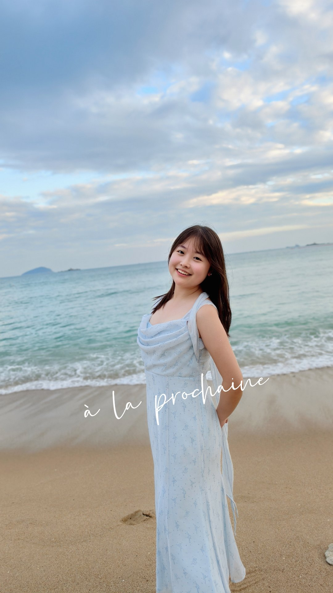
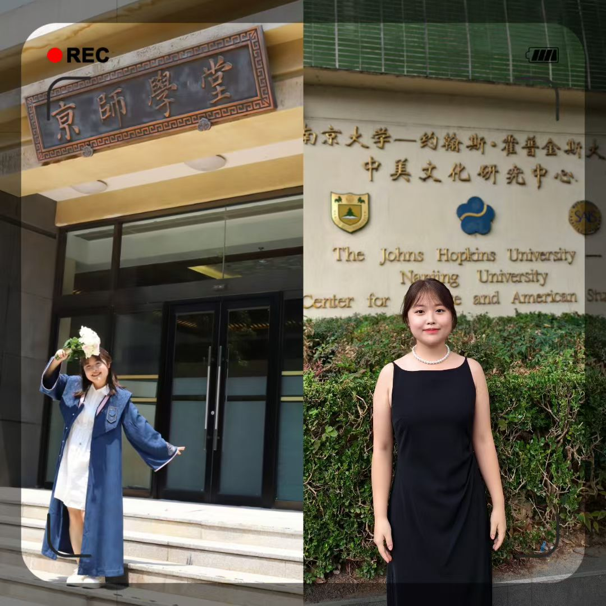
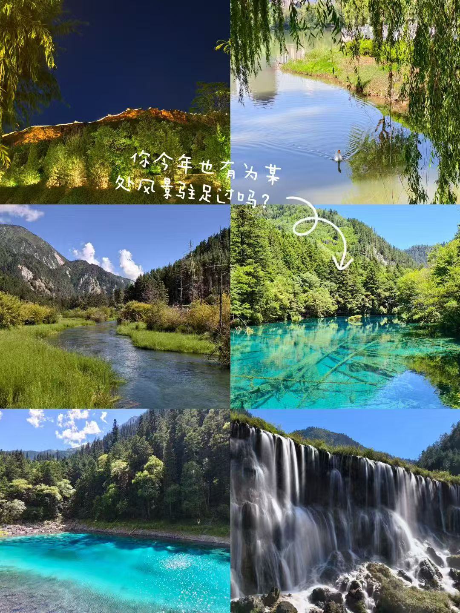
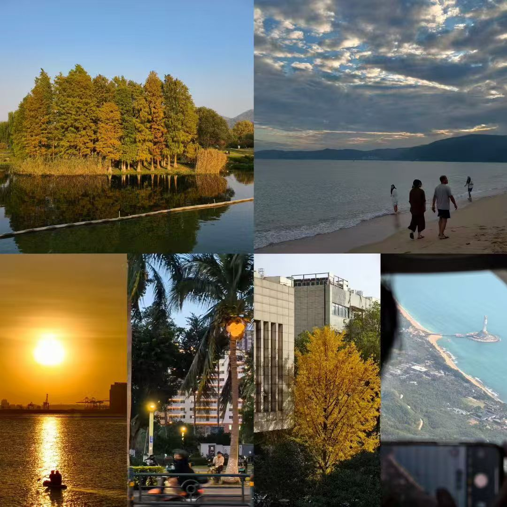
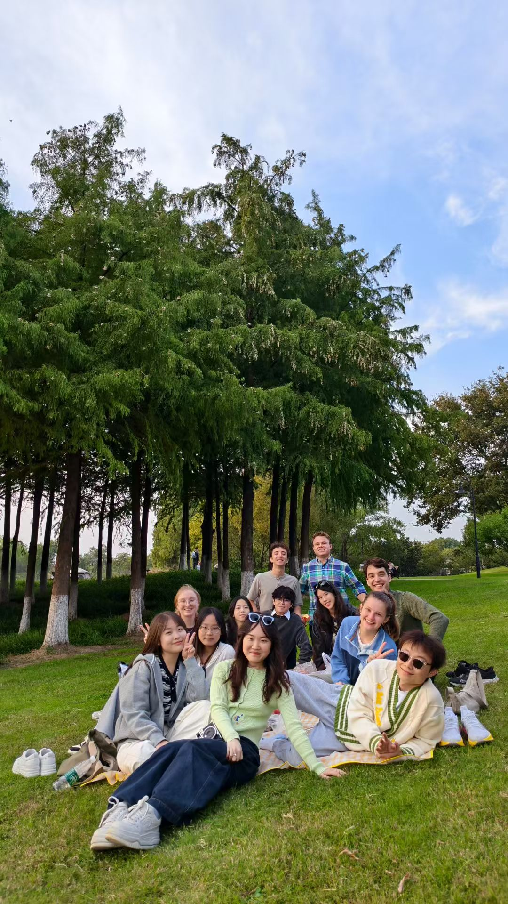

Hi, welcome to. 你好，欢迎来到黄钰茜的世界
既能写上报财政部的研究报告，也能剪出 4.9 万阅读的爆款内容。 把研究做进决策层，把故事讲进千万次播放。


教育经历 Education
从北京师范大学到南京大学–约翰斯·霍普金斯大学 SAIS 中美文化研究中心， 在人文社科、国际传播与政策研究的交叉地带持续深耕。
实习经历 Professional Experience
点击下方时间线节点，查看每一段经历的详细故事与核心产出。
软技能 Soft Skills
领导力 Leadership
白鸽青年志愿者协会宣传讲解中心主任，统筹策划并落地公益月等大型学生活动，搭建与北京市多家博物馆的合作关系，并荣获优秀学生干部。
北京市大学生科研创新计划 · 团队队长，带领团队获批市级课题并受邀参加第 81 届世界科幻大会。
演讲表达 Public Speaking
第 16 届 Model APEC 参赛代表，牵头撰写《APEC 生态旅游走廊建设提案》，获评「最佳政策提案」，个人获「杰出代表」称号。
擅长在跨校论坛、驻华大使来访等重大活动中完成新闻稿撰写与现场宣讲：《美国驻华使馆领事代表团到访中美中心》、《40周年 | 中美中心举办国际化人才培养研讨会》。
沟通协调 Coordination
在中美文化研究中心担任公共关系部学生助理，负责跨校百人论坛、校企合作等活动的协调与传播。
曾带队一个比自己年长许多的成人班级（高中教师群体），以清晰的沟通与节奏把控促成项目顺利完成。
在保尔森基金会实习期间，直接面向所有获奖团队进行沟通，负责收取并整理资料、拍摄宣传片，以及送达会议日程、协调团队配合等磨合工作。
作品集 Selected Works
内容创作与 AI 能力，是我工作的两翼。选择一个工具箱，看看里面的作品。
AI 能力类
AI 产业分析、智能工作流与数据看板
内容创作类
文章、报道、公众号稿件与学术论文
荣誉证书 Honors & Certificates
这里陈列着我获得过的一些认可，点击任意证书即可查看 PDF 详情。
关于我 Beyond Work
The Consul
工作之外，我用旅行丈量世界，用摄影收藏光影，用阅读沉淀思考。ESFJ 的我相信人与人之间的连接，也享受把想法变成作品的过程。
旅行 Travel · 从兰州出发
从黄河岸边的家乡兰州出发，已到访美国、日本、韩国，以及中国台湾、中国香港、中国澳门与国内众多城市。
摄影 Photography
用镜头收藏光影，把瞬间变成永恒。


阅读 Reading
在书里看更大的世界，也把灵感带回工作与生活。轻触任意书脊，它都会飞下来和你聊聊。
过去一年最喜欢的时刻 Favorite Moment
和来自世界各地的朋友、同学一起，在南京的玄武湖边野餐。

最喜欢的运动 Favorite Sports
球台、球场、雪道，再到最近重新拾起的拉丁舞——运动是我保持状态的秘密。
联系我 Contact me
如果你对我的经历感兴趣，或者有合作、交流的想法，欢迎通过邮件或简历找到我。
欢迎联系我 · Welcome to reach out to me